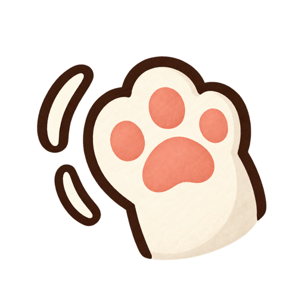
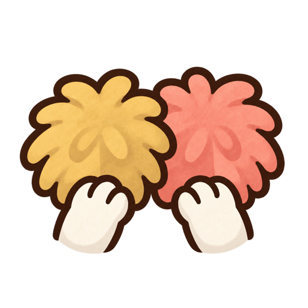
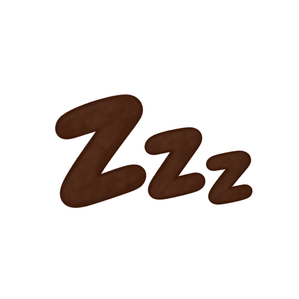
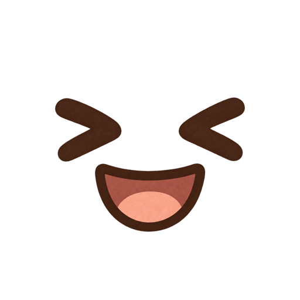
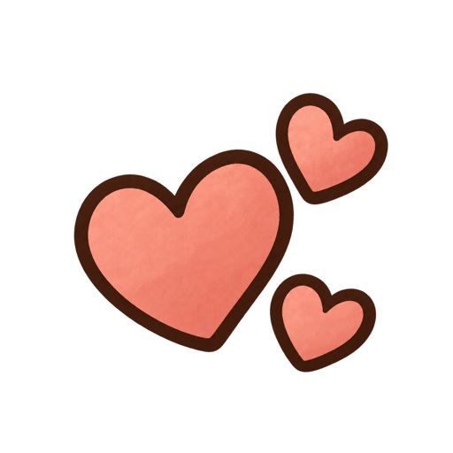
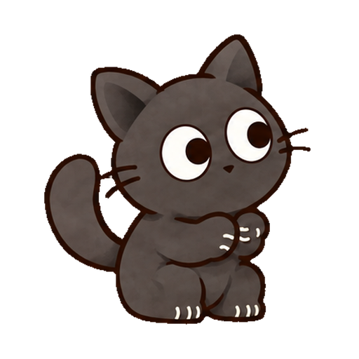

GROMO-1870 · FINAL DIRECTION C
집중 이모티콘 5종
앱 캐릭터의 코코아색 선과 부드러운 수채화 채색을 맞춘 상징 스티커형이다. 인사·응원·졸림·웃음·하트뿅뿅을 512×512 투명 PNG로 제공한다.






IN-GAME EXAMPLE
고양이 위 말풍선으로 표시
감정 상징은 캐릭터를 가리지 않도록 머리 위에 짧게 뜬다. 크림색 말풍선과 코코아색 테두리를 사용하고, 꼬리가 발신 고양이를 가리킨다.
- 표시 예시
- 폼폼 응원
- 아이콘
- 약 48px
- 위치
- 고양이 머리 위
- 표시 시간
- 3초 제안 유지